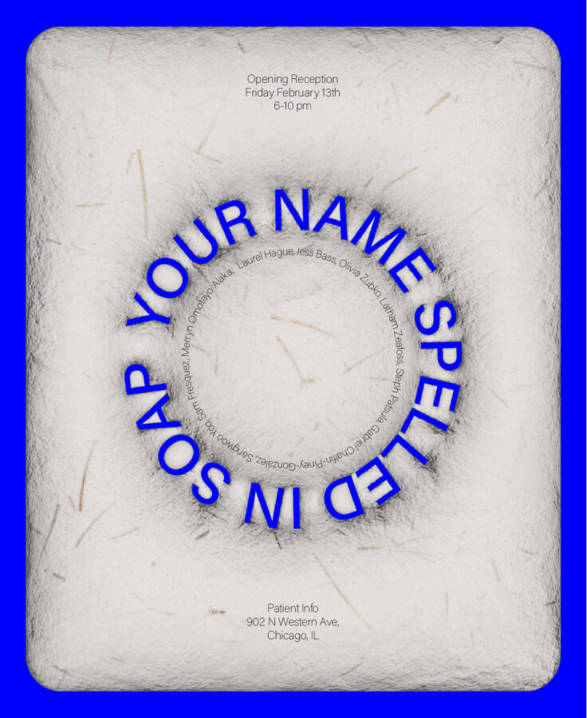

Your Name Spelled in Soap
Your Name Spelled In Soap opens on Friday 2/13! Excited for the varied work that will make up this exhibition and to celebrate all of the incredible artists making it happen.
Join us on 2/13 from 6-10pm to see work by Laurel Hague, Jess Bass, Olivia Zubko, Latham Zeafoss, Steph Patsula, Gabriel Chalfin Piney Gonzalez, Sangwoo Yoo, Sam Fresquez and Merryn Omotayo Alaka.
Curated by Christina Sadovnikov and Brian Jucas
Poster credit Kim Peters @kimcheii